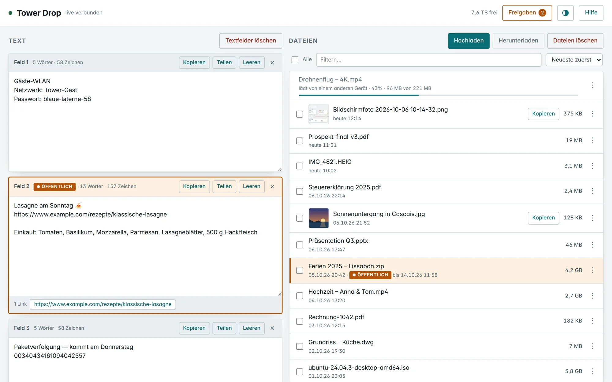
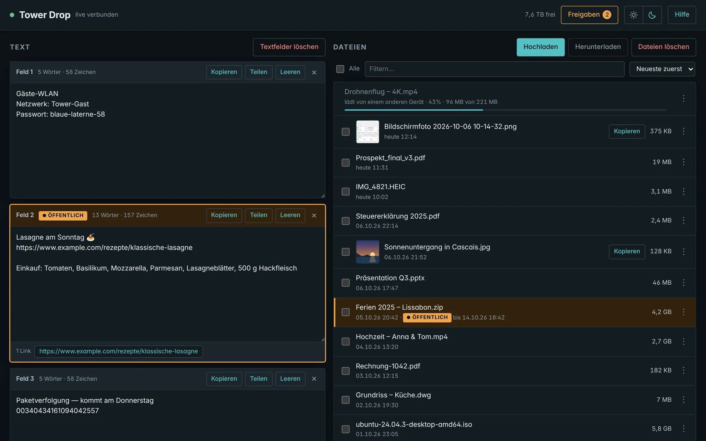
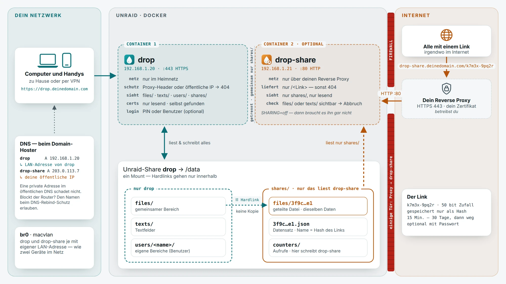

Live auf jedem Gerät
Handy, Laptop, PC — Windows, Mac, Linux, Android, iPhone. Was ein Gerät hineinlegt, sehen alle anderen sofort.
Kostenlos & Open Source · selbst gehostet
Wie AirDrop, nur für jedes Gerät und jedes System. Zu Hause eine Webseite öffnen, Text, Dateien oder einen Screenshot hineinziehen — und es ist sofort auf jedem anderen Gerät. Ohne das lästige Installieren und Aktualisieren einer App auf all deinen Geräten, ohne Login, ohne Cloud.
Läuft auf deinem eigenen Server · AGPL-3.0 · 17 Sprachen
Was sonst im Weg steht — und wie es mit Dropnook läuft.
Sonst: Auf jedem Gerät eine App installieren und aktuell halten
Mit Dropnook: Läuft im Browser — auf jedem Handy, Tablet und Computer
Sonst: Jedes Gerät einzeln einrichten
Mit Dropnook: Einmal auf deinem Server einrichten, danach nur noch die Adresse öffnen
Sonst: Empfangene Dateien füllen den Speicher der Geräte
Mit Dropnook: Alles liegt an einem Ort — jeder holt nur, was er wirklich braucht
Sonst: Beide Geräte müssen gleichzeitig an sein
Mit Dropnook: Jetzt ablegen, später abholen
Sonst: Upload abgebrochen — alles von vorn
Mit Dropnook: Dieselbe Datei nochmals ablegen — es geht dort weiter, wo es aufgehört hat
Sonst: Fremde Cloud, Konto und Abo
Mit Dropnook: Dein eigener Server, kein Konto, kostenlos
Sonst: Schwer im Griff, was ins Internet geht
Mit Dropnook: Ins Internet nur auf Wunsch: einzeln, mit Ablaufzeit und auf Wunsch mit Passwort
Sonst: Umständlich für Familie und Gäste
Mit Dropnook: 17 Sprachen, hell und dunkel — passt sich jedem von selbst an
Handy, Laptop, PC — Windows, Mac, Linux, Android, iPhone. Was ein Gerät hineinlegt, sehen alle anderen sofort.
Fürs WLAN-Passwort, einen Link, eine Adresse. Mit Wort- und Linkzählung — und nichts geht verloren, wenn die Verbindung abbricht.
Hineinziehen oder auswählen. Uploads laufen nach einer Unterbrechung weiter, und alle sehen den Fortschritt.
Einen Screenshot direkt aus der Zwischenablage einfügen. Am anderen Computer legt ihn ein Klick wieder in die Zwischenablage.
Muss etwas aus dem Haus? Eine Datei oder ein Text über einen Link, der von selbst endet — auf Wunsch mit Passwort.
Folgt der Sprache des Browsers und dem Erscheinungsbild des Systems — oder per Knopf.
Drop folgt dem Erscheinungsbild deines Systems oder wechselt mit einem Klick — jeder Browser merkt sich seine Wahl. Zieh am Regler zum Vergleichen.


Ein Klick aufs Bild öffnet die Galerie — hineinzoomen, mit den Pfeiltasten blättern.
drop hält deine Dateien und Texte und ist nur im Heimnetz erreichbar. drop-share liefert die Freigabe-Links ins Internet aus — und sieht nichts ausser dem, was du geteilt hast. Reverse Proxy und Zertifikate bleiben deine Sache.

Auf Unraid einen Share namens „drop“ anlegen. Dort liegen deine Dateien und Texte.
Im Compose Manager Plus einen Stack anlegen, die compose.yaml einfügen und zwei freie IP-Adressen eintragen.
drop.deinedomain.com öffnen — auf jedem Gerät im Heimnetz.
Kein Unraid? Dropnook läuft auf jedem Linux-Rechner mit Docker Compose — so geht’s.
Nein. Alles bleibt auf deinem Server. Von aussen erreichbar ist nur, was du als Link teilst — und nur für den, der den Link hat.
Ja — kostenlos und Open Source unter der AGPL-3.0. Kein Konto, kein Abo, keine Telemetrie. Wenn es dir nützt, kannst du dich mit einer Spende über PayPal bedanken — am besten ab 5 €, weil PayPal von jeder Zahlung eine feste Gebühr einbehält.
Nein. Ein aktueller Browser genügt — auf Handys, Tablets und Computern gleichermassen.
Dropnook ist für Unraid gemacht, und die Anleitung ist für Unraid. Es läuft aber auch auf jedem Linux-Rechner mit Docker Compose.
Über dein VPN funktioniert Dropnook wie zu Hause. Ohne VPN lassen sich nur die Freigabe-Links öffnen, die du erstellt hast.